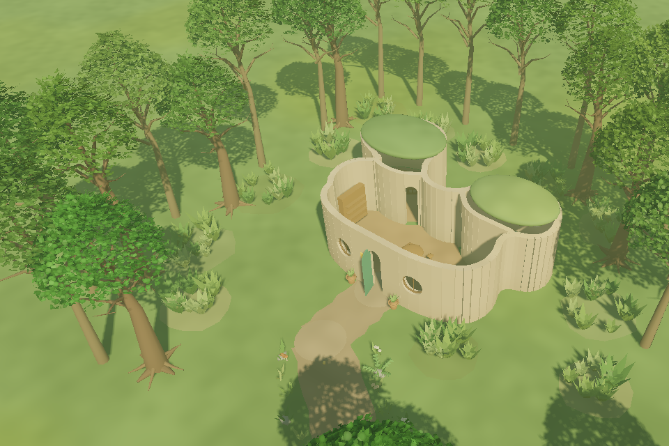
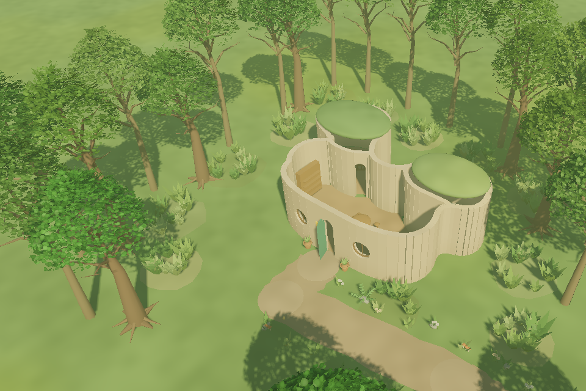
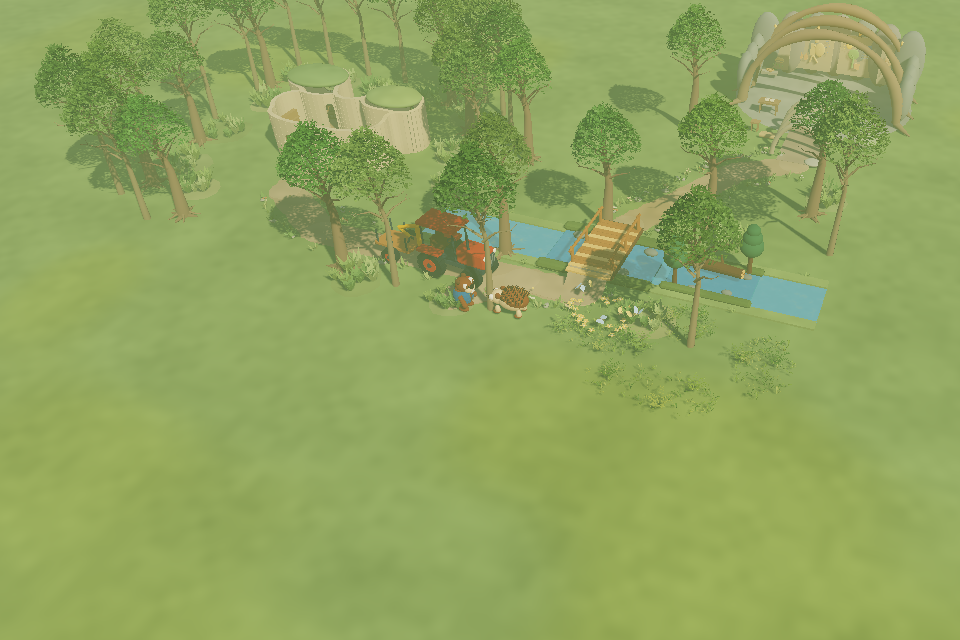
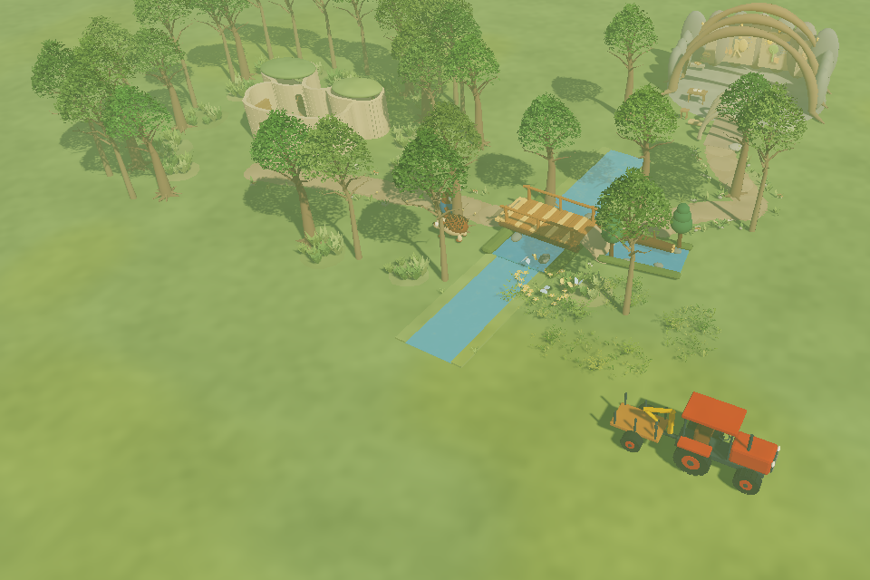
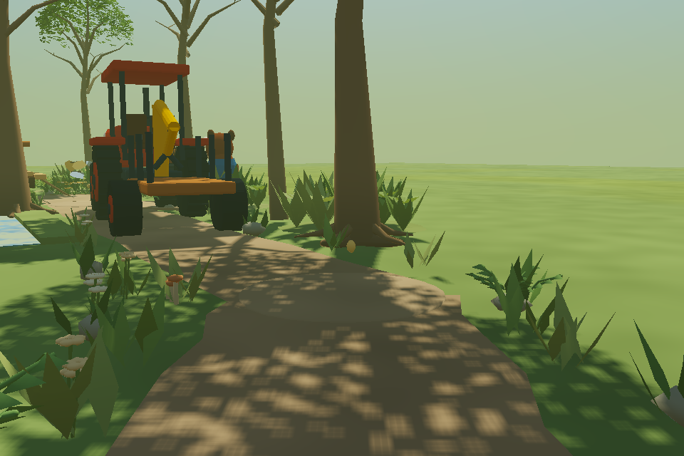
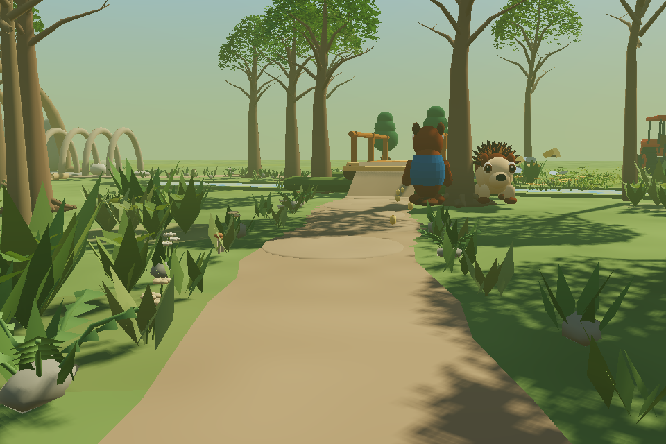

Actual WebGPU readback, same camera/viewport/backend and quality. Clearing framing was widened identically on both pages to show the southeast tractor. Changes: rotated bridge with connected earth ramps, separate tractor support/approach, traced outdoor route, forward-facing walking start. No performance claim.
Still not book-level photorealism. The atlas is oblique; this is authored correspondence, not a survey. Height and vegetation texture consumers remain gated pending shoreline/full-footprint checks. Exact evidence and limits · Registration · Open forest





